This guide covers every page of the dashboard, the new Today's Plan page, a daily routine you can follow, and the key terms in plain language.
The dashboard looks at a stock's price bars and trading volume and answers four questions:
When several readings agree, that is not several independent proofs: they are built from the same prices. Treat agreement as "worth a closer look", never as "buy".
| Control | What it does |
|---|---|
| Search box | Type a ticker (e.g. AAPL) and press Enter to load it. Press / to jump to the box. |
| 30m / 1D | Bar size: 30-minute bars or daily bars. |
| RTH / ETH / ALL | Regular trading hours only (9:30–16:00 New York), extended hours, or both. Use RTH unless you have a reason not to. |
| As of | "Replay": view the analysis as it looked at an earlier moment, using only the bars that existed then. Great for practising without hindsight. |
| Sun/moon icon | Light or dark theme. |
| Quit | Stops the app on this PC. |
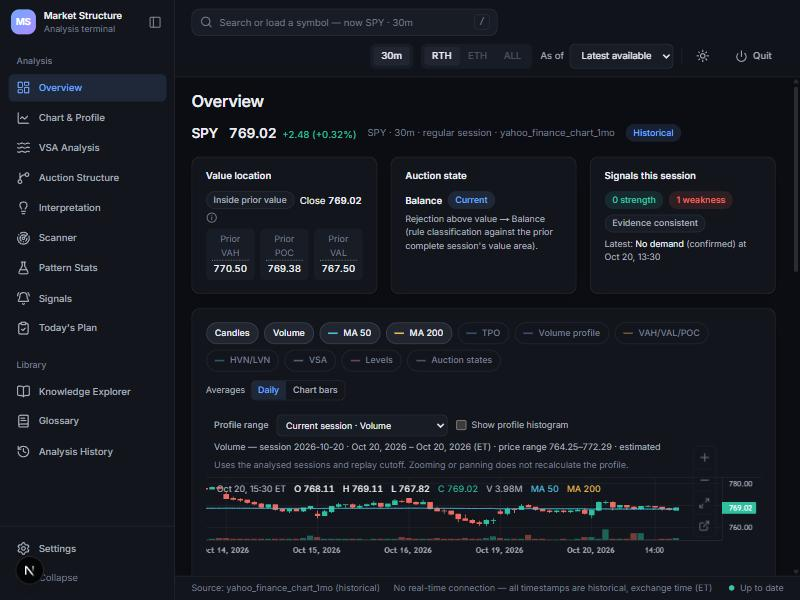
What it shows: the loaded stock's latest price, where it closed relative to yesterday's value area (with the VAH, POC and VAL numbers), the current auction state, and how many strength/weakness signals fired this session.
How to use it: your first stop after loading a stock. In ten seconds you know: above, inside or below yesterday's value? Accepted or rejected? Any signals?
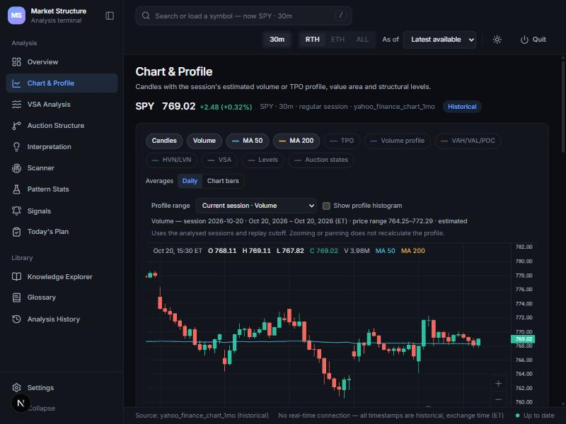
What it shows: the price chart. Toggle buttons add layers: volume bars, the 50- and 200-day moving averages, TPO or volume profile (a sideways histogram of where trading happened), VAH/VAL/POC lines, high/low-volume nodes, VSA markers, levels and auction states.
How to use it: turn on VAH/VAL/POC to see yesterday's value zone on today's chart. The 50/200 averages give the bigger trend: price above a rising 200-day average is a broad uptrend. The pop-out icon opens the chart in its own window.
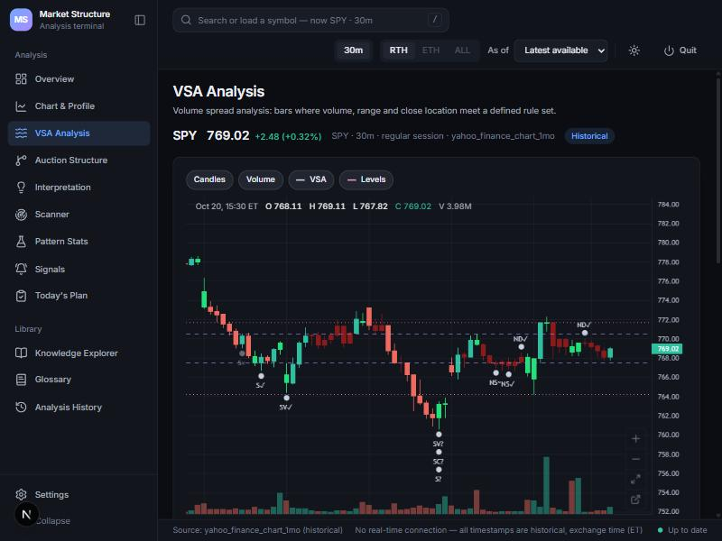
What it shows: bars where volume, bar size and where the bar closed match one of the dashboard's rules. A tick (✓) means later price action confirmed it; a question mark means it is still unconfirmed.
How to use it: click a marker to see the exact rule, the numbers behind it, and alternative explanations. Markers below bars lean "strength", above bars lean "weakness". Use them as context, not triggers.
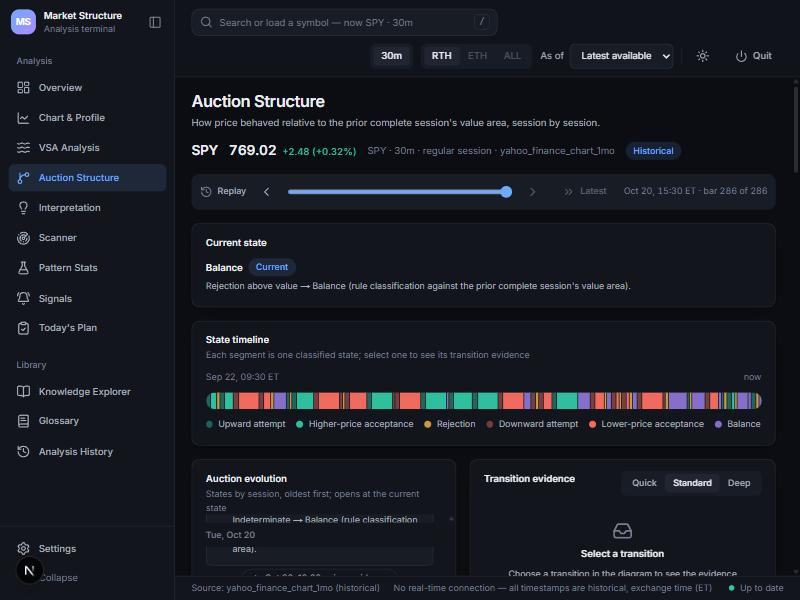
What it shows: session by session, whether price was in balance, attempting a breakout, accepted higher or lower, or rejected. The replay slider steps through the bars one at a time.
How to use it: Setup A depends on "higher-price acceptance" (three closes above yesterday's VAH). This page shows you exactly when that happened and why.
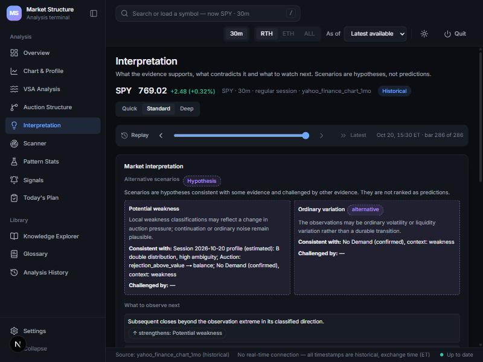
What it shows: the engine's explanation of the evidence as two or more hypotheses (for example "potential weakness" versus "ordinary variation"), with what would strengthen or weaken each.
How to use it: read the "challenged by" lines. If the evidence is mixed, the plan says stand aside. The Quick / Standard / Deep switch changes how much detail you see.
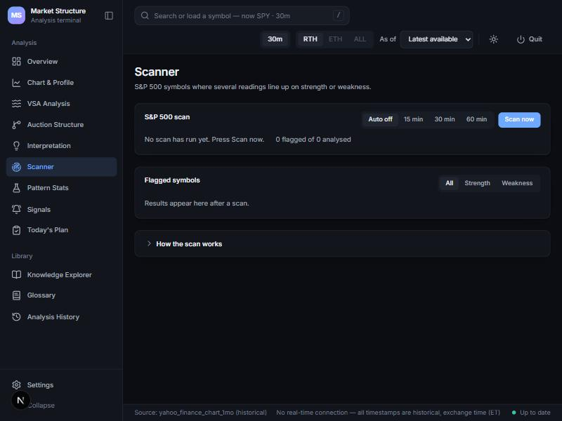
What it shows: S&P 500 stocks where at least three of four readings (value location, auction state, VSA signals, price action) agree, none disagrees, and the engine sees no contradiction. A full scan takes a few minutes.
How to use it: as a shortlist for your watchlist, filtered to Strength or Weakness. A flag means "aligned evidence", not a prediction.
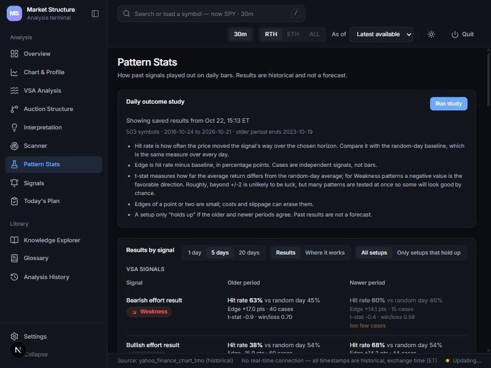
What it shows: for every VSA signal and price pattern (gaps, 20-day breakouts, 52-week highs, RSI-2 extremes, moving-average crosses and more), how often price moved the signal's way over 1, 5 or 20 days, compared with a random day.
How to use it: this is the most useful page for longer-term investing questions. Look for patterns that hold up in both periods with a meaningful edge, and ignore the rest. The study refreshes itself monthly; Run study refreshes it now.
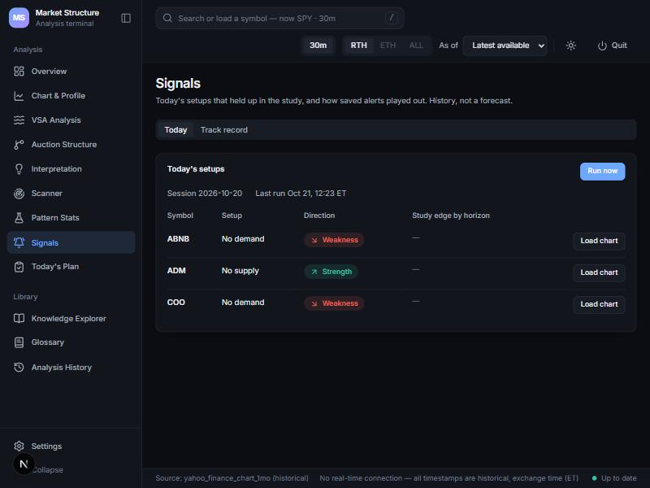
What it shows: stocks where a pattern that held up in Pattern Stats fired on the latest daily bar, with its direction. The Track record tab shows how earlier alerts actually played out.
How to use it: another source for your watchlist. Load chart opens the stock in the analysis pages. Check the track record before trusting any type of alert.
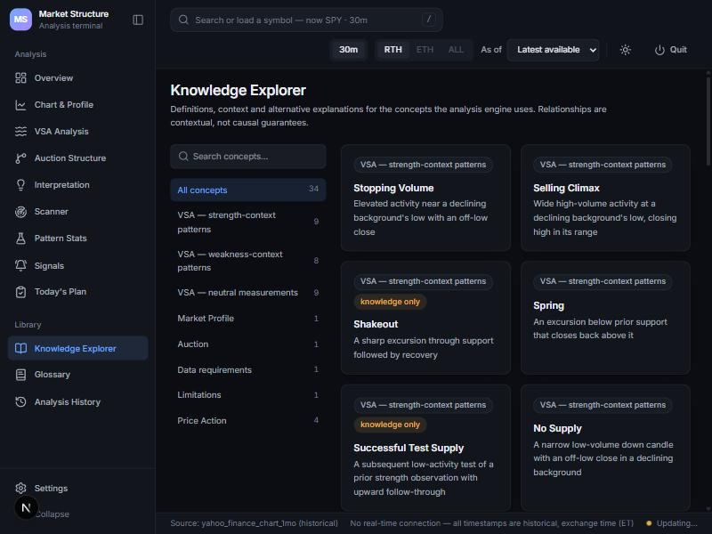
The new page that puts your trading plan's routine in one place. It has four parts.
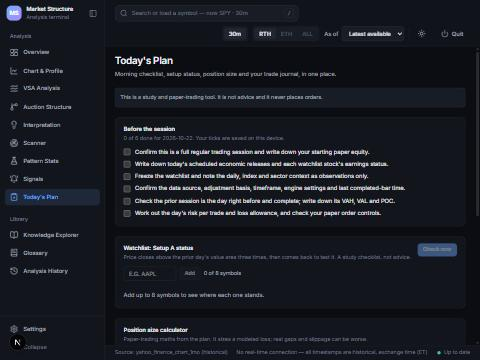
Six items from your trading plan: confirm it is a full trading day and note your starting paper money; note economic releases and earnings; freeze the watchlist; confirm the data settings; write down yesterday's VAH, VAL and POC; work out today's risk. Ticks are saved per day on that device and start fresh each morning.
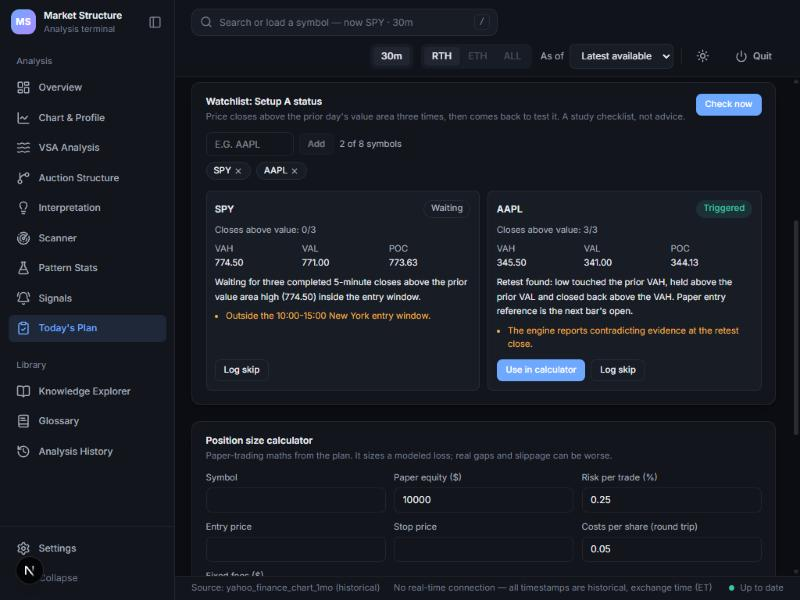
Add up to 8 tickers and press Check now (it also refreshes every minute during market hours). Each card shows yesterday's VAH, VAL and POC and one of these stages:
| Stage | Meaning |
|---|---|
| Waiting | No closes above yesterday's VAH yet inside the 10:00–15:00 window. |
| Counting (x/3) | 1 or 2 five-minute closes in a row above the VAH. A close at or below it restarts the count. |
| Retest watch | Three closes achieved. Now watching up to 5 bars for a dip that touches the VAH, stays above the VAL and closes back above the VAH. |
| Triggered | The retest happened. The card gives the stop (just under the dip) and, once the next bar exists, the entry reference (its open) and a target at twice the risk. |
| Cancelled | Price closed back at or below the VAH before a proper retest. No trade today. |
| Expired | No retest within 5 bars. No trade today. |
| Not eligible / No data | Something is missing: early-close day, missing bars, no usable yesterday, no bars from today yet, or the feed failed. |
Orange lines under a card are reasons not to trade (outside the time window, entry too far above the retest, the engine sees contradicting evidence, stale data...). The plan says: if any reason is shown, log a skip instead.
Only the first attempt each day counts. A cancelled or expired setup does not restart.
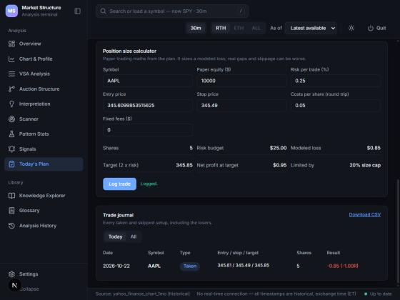
Press Use in calculator on a triggered card, or type the numbers yourself. It applies the plan's rules:
Worked example from the plan: $10,000 equity, entry $50.00, stop $49.50, costs $0.05 → 40 shares (the 20% cap), modeled loss $22, target $51.00, profit at target $38.
Log trade saves the paper trade to the journal. It is greyed out once the daily limit is reached (3 losing trades, or a 1% loss of starting equity), and also while today's results are still loading or can't be loaded.
The intraday Setup A is a day-trading study. For longer holds, the useful parts are Pattern Stats (which daily patterns held up over 5 and 20 days, and in which trend), Signals with its track record, and the 50/200-day averages on the chart.
| Term | Meaning |
|---|---|
| Value area | The price band where about 70% of yesterday's trading happened. |
| VAH / VAL / POC | Top of that band / bottom of that band / the single busiest price. |
| Acceptance | Several closes in a row beyond a level: the market is "agreeing" to trade there. |
| Rejection | Price went beyond a level but fell back inside. |
| Balance | Price staying inside the value area: no clear direction. |
| No demand / No supply | A small up-bar on low volume (buyers absent) / a small down-bar on low volume (sellers absent). |
| Stopping volume / climax | Very heavy volume at the end of a fall or rise, which can mark exhaustion. |
| Spring / upthrust | A quick poke below support (or above resistance) that closes back inside. |
| Retest | Price comes back to a level it broke, to see if it holds. |
| Stop / target | The price where you accept you were wrong / the price where you take profit. |
| R multiple | Profit or loss measured in units of the risk you planned. −1R = lost the planned amount. |
| Hit rate / edge / t-stat | See the Pattern Stats section above. |
| Paper trading | Pretend trades with no real money, to test a method honestly. |
| You see | What to do |
|---|---|
| "This needs the real backend" | The app is running in demo mode. Close it and start it with start.bat. |
| Watchlist card says No data | Yahoo didn't answer or the ticker is wrong. Check the spelling and press Check now again in a minute. |
| "No bars from today's session yet" | Normal before 9:30 New York time, on weekends and on holidays. |
| "Data is stale" | The newest bar is over 15 minutes old during market hours. Don't trade from it. |
| Log trade is greyed out | Either the daily limit is reached, today's results haven't loaded, or a field is missing. The message under the button says which. |
| Phone asks for a PIN | Enter the PIN you set. To change it, ask Claude to run the PIN script. |
| Scanner is slow | Normal: it checks about 500 stocks through a rate-limited free feed. Give it a few minutes. |